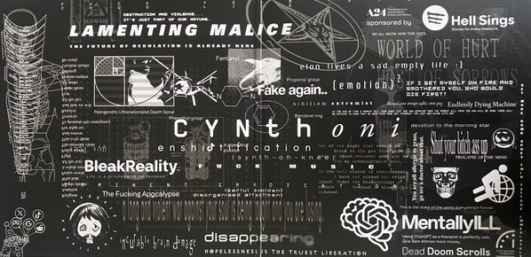
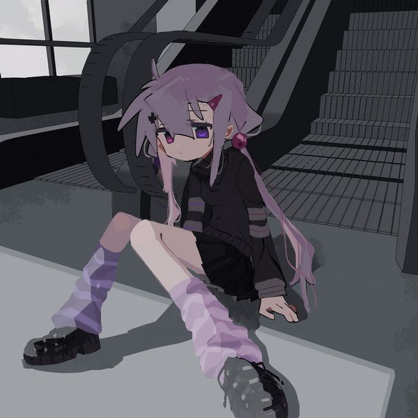
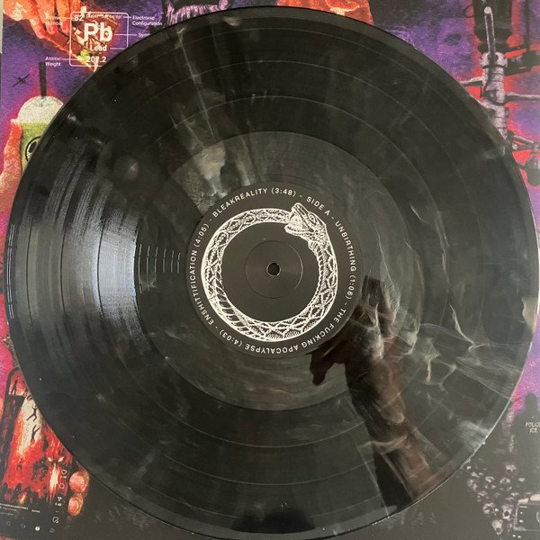
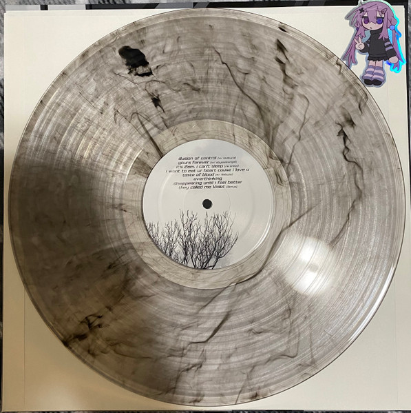
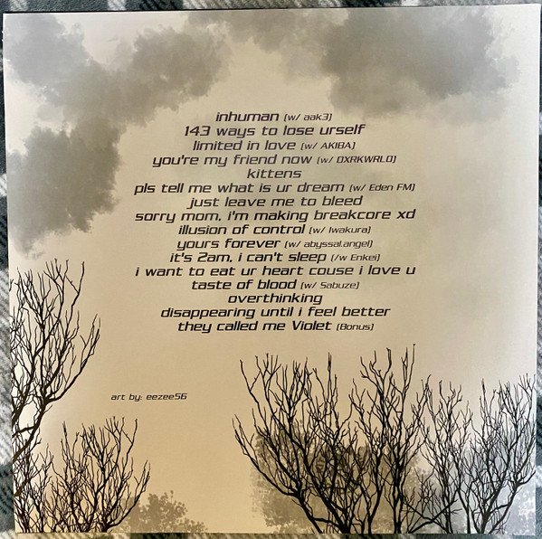
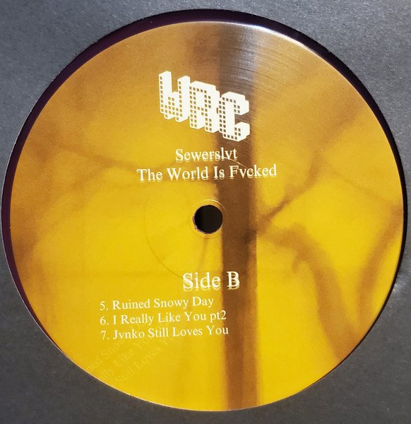

Каталог платівок
Музичні жанри каталогу
- Breaks
- Drum & Bass та Jungle
- Liquid Funk
- Neuro Funk
- Jungle
- Breakbeat та брейки
- Breakcore
- Big Beat
- Nu Skool Breaks
- Drum & Bass та Jungle
- Hardcore
- Класичний та швидкий рейв
- Gabber
- Happy Hardcore
- Speedcore
- Важкі та індустріальні форми
- Industrial Hardcore
- Breakbeat Hardcore
- Hardtek
- Класичний та швидкий рейв
- Downtempo
- Експериментальна ритміка
- IDM
- Illbient
- Chillwave
- Атмосферний звук
- Ambient
- Psybient
- Chill Out
- Експериментальна ритміка
Каталог

Ultraviolet (Exclusive Smoky Clear Vinyl Edition Featuring Bonus Tracks)
Артикул: UA-LP-77020

Draining Love Story
Артикул: UA-LP-02020

The World Is Fvcked
Артикул: UA-LP-02022
| Альбом | Виконавець | Рік | Дані лейблу | |
|---|---|---|---|---|
| Лейбл | Каталожний номер | |||
| LAMENTING MALICE | Cynthoni | 2026 | Not On Label (Cynthoni Self-released) | CYN003-V |
| ULTRAVIOLET | Usedcvnt | 2023 | Not On Label (Usedcvnt Self-released) | UV-LP01 |
| DRAINING LOVE STORY | Sewerslvt | 2020 | Geometric Lullaby | GEO-069 |
| THE WORLD IS FVCKED | 2020 | Wave Racers Collective | WRCV003 | |
| WE HAD GOOD TIMES TOGETHER, DON'T FORGET THAT | 2021 | Not On Label (Sewerslvt Self-released) | SLVT-002 | |
| Разом релізів у каталозі | 5 платівок (2020–2026 рр.) | |||
Видання та треклісти
Cynthoni — Lamenting Malice (2026) Нове
Подвійне лімітоване вінілове видання (Black Ice & White Marbled) на власному лейблі Cynthoni (CYN003-V) у стилях брейккор, драм-енд-бейс, джангл та габбер.

Додаткові ілюстрації

Відеопрев'ю альбому
Аудіофрагмент треку
Переглянути трекліст альбому (15 треків)
- Unbirthing 1:06
- The F***ing Apocalypse 4:02
- Ensh***ification 4:04
- BleakReality 3:48
- Hell Sings 4:28
- MentallyILL 5:23
- Imminent Eradication 4:51
- Nihilism Extremist 4:00
- Dead Doom Scrolls 4:41
- Endlessly Dying Machine 4:48
- (emotion)2 5:12
- Shut Your B***h A** Up: Prolapse Of The Mind 1:06
- Fearful Avoidant Disorganised Attachment 4:23
- Disappearing 6:48
- It Is 0 Seconds To Midnight 7:03
Usedcvnt — Ultraviolet (2023)
Атмосферний реліз на перетині ембієнту, драм-енд-бейсу та джанглу з колабораціями та фірмовими мелодійними текстурами.

Додаткові ілюстрації

Переглянути трекліст альбому (16 треків)
- Usedcvnt w/ Aak3 — Inhuman 2:07
- Usedcvnt — 143 Ways To Lose Urself 2:27
- Usedcvnt w/ Akiba (3) — Limited In Love 2:52
- Usedcvnt w/ DXRKWRLD — You're My Friend Now 2:23
- Usedcvnt — Kittens 2:29
- Usedcvnt w/ Eden FM — Pls Tell Me What Is Ur Dream 2:38
- Usedcvnt — Just Leave Me To Bleed 3:01
- Usedcvnt — Sorry Mom, I'm Making Breakcore XD 1:55
- Usedcvnt w/ Iwakura — Illusion Of Control 2:27
- Usedcvnt w/ Abyssal.angel — Yours Forever 2:59
- Usedcvnt w/ Enkei — It's 2am, I Can't Sleep 1:55
- Usedcvnt — I Want To Eat Ur Heart Couse I Love U 1:55
- Usedcvnt w/ Sabuze — Taste Of Blood 1:36
- Usedcvnt — Overthinking 2:24
- Usedcvnt — Disappearing Until I Feel Better 2:59
- Usedcvnt — They Called Me Violet (Bonus) —
Sewerslvt — Draining Love Story (2020) Хіт
Культовий альбом на 10 композицій загальною тривалістю близько 58 хвилин, що закріпив фірмовий стиль виконавиці на стику атмосферного драм-енд-бейсу та брейккору.

Додаткові ілюстрації

Переглянути трекліст альбому (10 треків)
- Love Is a Mighty Big Word 2:18
- Newlove 5:59
- Yandere Complex 4:10
- Ecifircas 5:47
- Lexapro Delirium 7:15
- This Fleeting Feeling 3:31
- Swinging in His Cell 5:22
- Mr. Kill Myself 7:51
- Down the Drain 8:08
- Slowdeath 8:12
Sewerslvt — The World Is Fvcked (2020)
Альбом 2020 року на стику джанглу, ембієнту, драм-енд-бейсу, експериментальної електроніки та трансу: сім треків загальною тривалістю близько 35 хвилин.

Додаткові ілюстрації


Переглянути трекліст альбому (7 треків)
- A Thousand Lonely 2:18
- Make-Me-Sad 6:15
- Psychosis 3:49
- Something of Value Less Than That 4:36
- Ruined Snowy Day 4:19
- I Really Like You Pt2 7:03
- Jvnko Still Loves You 6:59
Правила прослуховування та догляду за платівками
- Переконайтеся, що програвач виставлений за рівнем і тонарм правильно збалансований.
- Обережно дістаньте платівку з конверта, тримаючи її виключно за ребра або центральне яблуко.
- Покладіть диск на сліпмат опорного диска програвача.
- Очистіть поверхню вінілу антистатичною щіткою від пилу вздовж напрямку звукових канавок.
- Увімкніть обертання двигуна та перевірте правильність обраної швидкості (33⅓ або 45 RPM).
Плавне опускання голки за допомогою мікроліфта є критичним моментом — опускання тонарма вручну може легко пошкодити звукову канавку або голку звукознімача.
- Плавно опустіть голку на ввідну доріжку платівки за допомогою важеля мікроліфта.
- Після завершення прослуховування поверніть тонарм на базу та обов'язково сховайте платівку в антистатичний пакет.
Словник музичних та аудіофільських термінів
- Першопрес (First Press)
- Оригінальний перший тираж альбому, відштампований із найперших лакових матриць одразу після виходу релізу.
- Має найбільшу колекційну та акустичну цінність через максимальну чіткість геометрії звукових канавок.
- Аналоговий мастеринг
- Вініловий мастеринг
- Процес фінальної частотної та динамічної підготовки аудіозапису з урахуванням фізичних обмежень різання вінілового диска.
- Семпл (Sample)
- Фрагмент раніше записаного аудіотреку чи живого інструмента, перероблений та зациклений для побудови нової композиції в треках електронної музики.
- Антискейтинг (Anti-skate)
- Механічна компенсація сили скочування тонарма до центру диска для забезпечення рівномірного притискання голки до обох стінок стереоканавки.